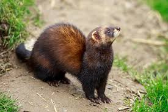
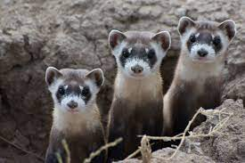
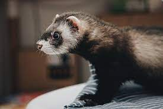

Ferrets:
Ferrets are a domestic species of small mustelid and
though to be a descendant of the European polecat which
belongs to the same genus as the weasel, Mustela.
Ferrets were first introduced into the New World in the
17th century, and were used extensively from 1860 until the
start of WW2 to protect American West granaries from rodents.
Fun Fact: The name 'ferret' derives from the Latin word
furittus meaning "little thief", likely referencing
to ferret's common behavior of secreting away miniature objects.



Source:
https://en.wikipedia.org/wiki/Ferret